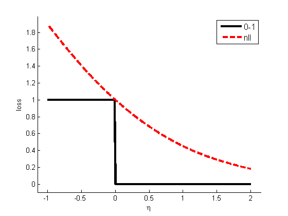

Hinge Loss Plot
y = 1;
eta = -1:0.01:2;
z = y*eta;
L01 = double(sign(z)<0);
Lhinge = max(0,1-z);
Lnll = log(1+exp(-z))/log(2);
figure; hold on
plot(z, L01, 'k-', 'linewidth', 3);
plot(z, Lhinge, 'b:', 'linewidth', 3);
plot(z, Lnll, 'r--', 'linewidth', 3);
h=legend('0-1','hinge','nll');
set(h,'fontsize', 12)
axis_pct
xlabel('\eta')
ylabel('loss')
printPmtkFigure('hingeLoss')
figure; hold on
plot(z, L01, 'k-', 'linewidth', 3);
plot(z, Lnll, 'r--', 'linewidth', 3);
h=legend('0-1','nll');
set(h,'fontsize', 12)
axis_pct
xlabel('\eta')
ylabel('loss')
printPmtkFigure('nllLoss')

